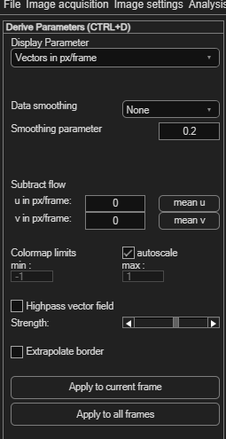
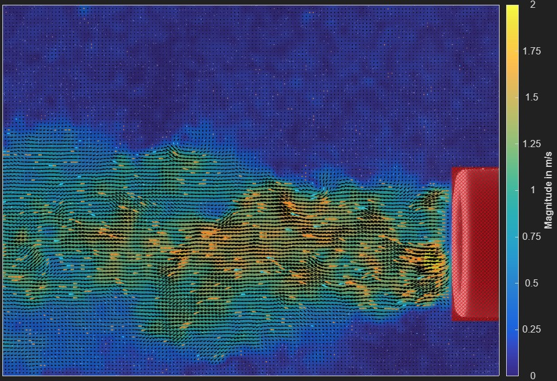

Deriving spatial parameters / modifying data
Beyond raw velocity vectors, PIVlab can compute and display a range of derived flow quantities, smooth your data, and subtract a background flow — all without re-running the PIV analysis.
Open via Plot → Spatial: Derive parameters / modify data (Ctrl+D).

Choosing what to display
The Display Parameter dropdown selects what's shown as a colour-coded overlay on the vector plot:
| Parameter | Notes |
|---|---|
| Vectors | Raw velocity vectors (the default). |
| Vorticity | Local rotation of the flow. |
| Magnitude | Speed, regardless of direction. |
| u component / v component | Horizontal / vertical velocity only. |
| Divergence | Net outflow/inflow at each point. |
| Q criterion | A common vortex-identification measure. |
| Shear rate | Magnitude of the rate-of-strain tensor. |
| Simple strain rate | A simpler strain-rate estimate. |
| Line integral convolution (LIC) | A texture-based visualization of flow direction. Reveals streak-like structure; see the resolution slider below. |
| Vector direction | Angle in degrees. |
| Correlation coefficient | Quality of the underlying correlation. |
| Uncertainty | Only available if you enabled uncertainty estimation in PIV settings. |
Units shown in the dropdown adapt automatically: pixels/frame if uncalibrated, meters/frame if calibrated with a zero time step (displacements only), or meters/second once fully calibrated.

When Line integral convolution (LIC) is selected, a LIC resolution slider appears — higher values look more detailed but take longer to compute.
Data smoothing
| Mode | Effect |
|---|---|
| None | No smoothing (default). |
| 2D | Spatial smoothing within each frame, using Damien Garcia's smoothn. Controlled by Smoothing parameter (default 0.2; larger = smoother, typical range 0.1–1). |
| time (moving average) | A moving average across neighbouring frames. Temporal window (± frames) sets how many frames on each side to include, combined with more weight given to closer frames. |
| 2D + time | Both, spatial smoothing first, then temporal. |
Subtracting a background flow
To reveal flow structure relative to a moving reference frame (e.g. removing a convection velocity), subtract a constant velocity from every vector:
- Type a value directly into u: or v: to subtract a fixed velocity.
- Or click mean u / mean v to subtract the field's own average automatically.
Colormap and display
| Control | Effect |
|---|---|
| autoscale | Stretches the colour map to each frame's own min/max. Turn this off when rendering a video, so the color scale stays consistent across frames. |
| min / max | Manual colour-map bounds, editable once autoscale is off. |
| Extrapolate border | Fills the border region using spring inpainting instead of the mean value — slower, but smoother-looking. |
Applying
Click Apply to current frame to preview on the current frame, or Apply to all frames to compute the selected parameter and settings across the whole session.